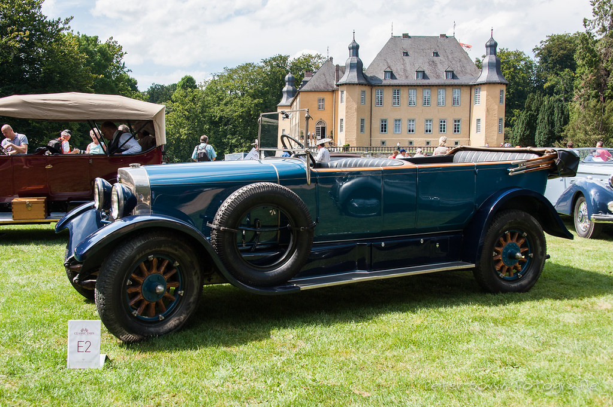
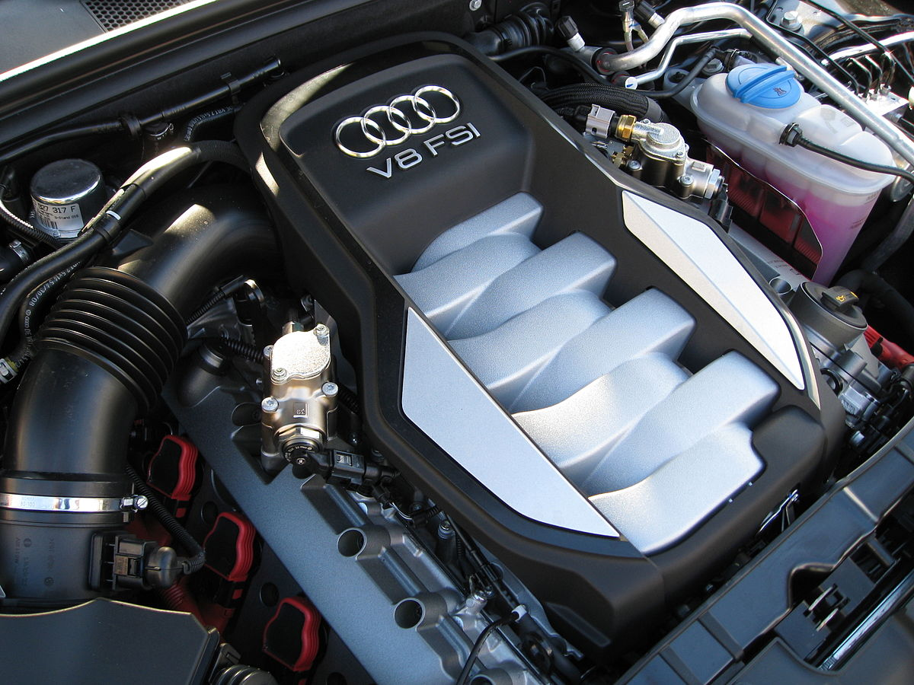

Além de estar inclusa na Lamborghini e Ducati, faz parte do grupo Volkswagen. Sendo considerada uma marca de luxo.
August Horch (engenheiro alemão) iniciou no final do século XIX o projeto para a construção de automóveis dando, assim, origem à fundação da marca Horch, na Primavera de 1899, em Zwickau, perto da cidade de Chemnitz.
A um ritmo quase alucinante para a época, a Horch produziu cinco modelos diferentes, até 1909. Nesse ano, Horch, devido a divergências com os diretores, decidiu abandonar o projeto.
Como Horch perdeu os direitos do nome da empresa então criada, teve que renomeá-la, mas com outra designação. Horch contornou com elegância o problema, adotando como nova marca o seu próprio nome.
As quatro argolas unidas representam as marcas alemãs que formaram a Auto Union, fundada em 1928, quando Jørgen Rasmussen, dono da DKW (Dampf-Kraft-Wagen), comprou grande parte das ações da empresa.
Naquele mesmo ano, Rasmussen comprou a falida empresa americana Rickenbacker, a qual produzira modelos com blocos V8, os quais seriam utilizados nas próximas geração da Audi, com os modelos Zwickau e Dresden, lançados em 1929.
As quatro argolas surgem quando, em 1932, a Auto Union adquire mais duas empresas: A Wanderer e, curiosamente, a Horch, nascendo o símbolo das Quatro Argolas, originário da fusão entre as quatro empresas de automóvel.
O Audi V8, lançado em 1988, consolidou essa tradição ao ser o primeiro modelo da marca com tração total de série no segmento de luxo.
Baseado no Audi 200, o V8 trouxe avanços notáveis, como um motor V8 de 3.6 litros com 250 cv e uma transmissão automática de 4 velocidades. Apesar de ter um interior mais sofisticado, sofreu críticas por sua semelhança visual com os modelos menores.
Em 1991, a versão V8 L introduziu um comprimento maior, um motor de 4.2 litros e um novo nível de luxo, ampliando sua popularidade.